Институт математики и информационных технологий
ИМИТ – это более 650 студентов, 60 преподавателей, 6 кафедр, 8 научных центров и учебных лабораторий, 8 направлений подготовки и 14 суперактуальных образовательных программ. Миссия института – подготовка для региона и страны элитных кадров в области информационных технологий, программирования и математических методов, способных заниматься разработкой новых методов и алгоритмов, инновационных программных продуктов, обладающих способностью выполнять исследовательские проекты, самообучаться и адаптироваться в стремительно меняющемся мире больших данных и «умных» технологий.
Программы обучения
01.03.02 ПРИКЛАДНАЯ МАТЕМАТИКА И ИНФОРМАТИКА, ПРОФИЛЬ «МАТЕМАТИЧЕСКОЕ И КОМПЬЮТЕРНОЕ МОДЕЛИРОВАНИЕ В ПРИРОДНЫХ И ИНДУСТРИАЛЬНЫХ СИСТЕМАХ»,
Программа ориентирована на подготовку специалистов, способных к проектной и научно-исследовательской деятельности в области цифровых технологий и приложений математического и компьютерного моделирования, владеющих навыками в сфере разработки и внедрения новых методов анализа и технологий исследования больших данных, с учетом требований рынка труда (как на уровне региона, так и РФ), перспектив и трендов в развитии информационных технологий, а также в соответствии с профессиональными стандартами «Специалист по большим данным».
Важным моментом подготовки является практическая деятельность выпускника, поэтому в реализации образовательной программы вместе с сотрудниками АГУ принимают участие сотрудники ведущих IT компаний-разработчиков. Во время обучения студенты осваивают несколько языков программирования, знакомятся с основными принципами построения сложных программных и информационных систем, изучают методы проектирования, создания, тестирования сложных видов программного обеспечения, участвуют в реализации крупных федеральных проектов, что позволяет им быть востребованными на рынке труда IT-специалистов. реализации образовательной программы привлечены сотрудники региональных IT-компаний. Среди индустриальных партнеров – ведущие IT-компании, такие как ЯНДЕКС, PostgressProfessional, IntegraSourses.
Срок обучения — 4 года очно.
Чему научат
Студенты получат навыки в области анализа данных и применения методов математического моделирования, прогнозирования, системного анализа, а также разработке и применению информационных технологий (в том числе технологий анализа и визуализации BigData) при решении прикладных проблем цифровой экономики и финансов, социологии, экологии и в других наукоемких областях. Среди профильных дисциплин: Объектно-ориентированный анализ и проектирование, Алгоритмизация и программирование на языке Python, Методы анализа и обработки данных на языке Python и R, Прикладная статистика, Имитационное моделирование.
Институт сотрудничает с крупными компаниями, что даёт возможность студентам проходить стажировки и практики в реальном секторе цифровых технологий.
Карьерная траектория
Выпускники программы строят свою карьеру в разных областях и сферах деятельности в должности разработчика информационных систем, системного программиста, разработчика баз данных, специалиста в сфере криптографии, администратора баз данных, аналитика данных, архитектора информационных систем, администратора компьютерных сетей, математика, Web-программиста, специалиста по анализу финансовых решений, разработчика приложений для мобильных устройств в любой сфере деятельности (академическая, карьера в области бизнеса, экономики и финансов, карьера в сфере IT).
Контакты
Руководитель программы – кандидат технических наук, доцент кафедры теоретической кибернетики и прикладной математики Хворова Любовь Анатольевна.
Дополнительная информация:
- Телефон: +7 (3852) 298-151
- E-mail: mailto:khvorovala@gmail.com
02.03.01 МАТЕМАТИКА И КОМПЬЮТЕРНЫЕ НАУКИ, ПРОФИЛЬ «КОМПЬЮТЕРНЫЕ НАУКИ»
Программа нацелена на подготовку разработчиков программного обеспечения и специалистов по компьютерным наукам и анализу данных. Она ориентирована на подготовку специалистов, способных к научно-исследовательской и педагогической деятельности в области математики и IT-технологий, владеющих навыками в сфере применения инновационных математических методов и информационных технологий, с учетом требований рынка труда (как на уровне региона, так и РФ), перспектив и трендов в развитии информационных технологий.
Программа включает:- базовые дисциплины, направленные на развитие цифровой культуры, формирование умения работать в команде, проектной компетентности, коммуникативных навыков, в том числе навыков делового общения на иностранном языке, навыков саморазвития и самоорганизации;
- дисциплины, формирующие компетентность в области фундаментальных основ математики и информатики, основ программирования и баз данных, а также формирующие способность разработки алгоритмов, компьютерных программ, пригодных для практического применения;
- профессиональные дисциплины, направленные на формирование навыков научно-исследовательской деятельности по решению фундаментальных и прикладных задач в области моделирования различных процессов и использования современных IT-технологий.
К реализации образовательной программы привлечены сотрудники региональных IT-компаний. Среди индустриальных партнеров – ведущие IT-компании, такие как ЯНДЕКС, PostgressProfessional, IntegraSourses.
Срок обучения — 4 года очно.
Чему научат
Студенты изучают фундаментальные вопросы компьютерных наук, учатся решать проблемы чистой и компьютерной математики, а также использовать фундаментальные математические знания и современные информационные технологии при решении прикладных задач в области науки и техники.
Карьерная траектория
Наша программа готовит разработчиков и исследователей, которые могут работать в разных областях и создавать продукты, меняющие к лучшему жизнь миллионов людей. После окончания программы можно работать программистом, инженером, специалистом по анализу данных и работе с BigData, исследователем и учёным, разработчиком алгоритмов и аналитиком.
Наши выпускники работают:- в компаниях-производителях программного обеспечения (Яндекс, Microsoft, Google, Facebook, ABBYY, SAP, SAS, Лаборатория Касперского и т.д.);
- в IT-отделах и отделах по работе с большими данными крупных компаний (Билайн, МТС, Мегафон);
- в банковском, инвестиционном и страховом бизнесе (Сбербанк, Тинькофф Банк, Альфа-Банк, Московская биржа);
- в бизнес-консалтинге (PWC, McKinsey & Co, Accenture, BCG);
- в исследовательских центрах и университетах;
- в IT стартапах.
Контакты
Руководитель программы – кандидат физико-математических наук, директор ИМИТ Журавлев Евгений Владимирович.
Дополнительная информация:
- Телефон: +7 (3852) 29-81-37
- E-mail: evzhuravlev@mail.ru
09.03.03 ПРИКЛАДНАЯ ИНФОРМАТИКА, ПРОФИЛЬ «ИНТЕЛЛЕКТУАЛЬНЫЙ АНАЛИЗ ДАННЫХ»
Образовательная программа представляет собой высокотехнологичную, наукоемкую инновационную сферу деятельности, использующую самые последние достижения в области информационно-коммуникационных технологий и смежных областях. Данное направление объединяет собственно информатику и те области, в которых можно применить компьютерные технологии: экономика, бухгалтерский учет, автоматизация технологических процессов, менеджмент, дизайн, юриспруденция и др. Иными словами, специалист по прикладной информатике – это всегда профессионал «два в одном».
Основная цель программы — это подготовка бакалавров, способных решать широкий круг задач, связанных с созданием, внедрением, сопровождением и эксплуатацией информационных систем в различных предметных областях: в экономике, образовании, производстве. Данная программа имеет международную профессионально-общественную аккредитацию.
К реализации образовательной программы привлечены сотрудники региональных IT-компаний. Среди индустриальных партнеров – ведущие IT-компании, такие как ЯНДЕКС, PostgressProfessional, IntegraSourses.
Срок обучения — 4 года очно.
Чему научат
Полный набор навыков по разработке и сопровождению информационных систем; умение работать в команде. сочетание высокого качества образования, возможностей личностного роста и создания широкого набора профессиональных связей в рамках всего АГУ. Студенты получат навыки и знания в сфере разработки и применения методов анализа и обработки данных (в том числе распознавание изображений и методы искусственного интеллекта), программной инженерии, защиты информации, в прикладном моделировании и управлении инновационной деятельностью.
Карьерная траектория
Сочетание глубоких теоретических знаний, получаемых студентами из классических курсов математики и практического опыта в разработке и реализации алгоритмов для решения реальных кейсов помогают выпускникам программы успешно строить свою карьеру в ведущих ИТ-компаниях и научно-исследовательских центрах и лабораториях.
Контакты
Руководитель программы – кандидат физико-математических наук, доцент кафедры математического анализа Пономарев Игорь Викторович.
Дополнительная информация:
- Телефон: +7 (3852) 29-81-37
- E-mail: igorpon@mail.ru
09.03.04 ПРОГРАММНАЯ ИНЖЕНЕРИЯ, ПРОФИЛЬ «РАЗРАБОТКА ПРОГРАММНО-ИНФОРМАЦИОННЫХ СИСТЕМ»
Программная инженерия – это область компьютерной науки и технологии, которая занимается построением программных систем, настолько больших и сложных, что для этого требуется участие слаженных команд разработчиков различных специальностей и квалификаций.
Высокий уровень диверсификации программы, продвинутый уровень подготовки в области информационных технологий, математических методов, компьютерных наук, искусственного интеллекта дает нашим студентам дополнительные конкурентные преимущества в дальнейшей учебе и работе.
К реализации образовательной программы привлечены лучшие сотрудники региональных IT-компаний. Среди индустриальных партнеров – ведущие IT-компании, такие как ЯНДЕКС, PostgressProfessional, IntegraSourses.
Срок обучения — 4 года очно.
Чему научат
По завершению образовательной программы выпускник будет уметь проектировать, разрабатывать программные продукты (программное обеспечение) и проекты (проекты разработки программного продукта), программы и программную документацию; управлять процессами жизненного цикла программного продукта, использовать современные методы, средства и технологии разработки программного обеспечения; работать в коллективе, управлять командой исполнителей в процессе производства программных продуктов.
К особенностям подготовки программистов относятся углубленное изучение наиболее востребованных на рынке систем и языков программирования таких как SQL, ORACLE, новейших информационных технологий: COM, DCOM, CORBA; технологий таких как ActiveX, ActiveX Data Objects (ADO), Inter Base Express (IBX); Active Server Pages (ASP). Студенты учатся проектировать и разрабатывать веб- и мобильные приложения и информационные системы для различных платформ с применением различных СУБД, методов искусственного интеллекта, виртуальной и дополненной реальности.
Карьерная траектория
Выпускник может работать в любой организации и структуре, на виртуальном предприятии или за домашним компьютером, занимаясь деятельностью, связанной с применением (необходимой разработкой, доработкой, модификацией, модернизацией и т. д.) программного обеспечения. Более того, современные Интернет-технологии позволяют программисту работать по свободному графику и выполнять заказы, приходящие из любой точки мира.
Закончив данное направление, выпускник сможет работать:- инженером по тестированию ПО;
- прикладным программистом;
- системным программистом;
- аналитиком компьютерных систем;
- аналитиком компьютерного банка данных;
- конструктором компьютерных систем;
- разработчиком сетевого и коммуникационного ПО;
- научным работником (вычислительные системы, программирование);
- аналитиком компьютерных коммуникаций;
- WEB – программистом или WEB - дизайнером;
- разработчиком баз данных, экономического и бухгалтерского ПО;
- разработчиком интеллектуальных систем с применением искусственного интеллекта;
- системный аналитик;
- разработчиком мультимедийного ПО и компьютерных игр.
Контакты
Руководитель программы – кандидат физико-математических наук, заведующий кафедрой информатики Козлов Денис Юрьевич.
Дополнительная информация:
- Телефон: +7 (3852) 298-152
- E-mail: dyk.barnaul@gmail.com
02.03.02 ФУНДАМЕНТАЛЬНАЯ ИНФОРМАТИКА И ИНФОРМАЦИОННЫЕ ТЕХНОЛОГИИ, ПРОФИЛЬ «ПРОГРАММИРОВАНИЕ И ИНФОРМАЦИОННЫЕ ТЕХНОЛОГИИ»
Программа ориентирована на подготовку специалистов, способных к производственно-технологической и научно-исследовательской деятельности в сфере проектирования, разработки, внедрения и эксплуатации информационных систем, управления их жизненным циклом, с учетом требований рынка труда (как на уровне региона, так и РФ), перспектив и трендов в развитии информационных технологий, а также в соответствии с профессиональными стандартами «Программист», «Системный аналитик».
Программа включает:- базовые дисциплины, направленные на развитие цифровой культуры, формирование умения работать в команде, проектной компетентности, коммуникативных навыков, в том числе навыков делового общения на иностранном языке, навыков саморазвития и самоорганизации;
- дисциплины, формирующие компетентность в области фундаментальных основ информатики и математики, языков программирования, алгоритмизации и баз данных, а также современных технологий проектирования информационных систем и вычислительных комплексов, в том числе систем искусственного интеллекта и технологий big data;
- профессиональные дисциплины, направленные на формирование практических навыков работы в концептуальном, функциональном и логическом проектировании информационных систем среднего и крупного масштаба, определения требований и проектирование программного обеспечения.
Ценность программы заключается в практикоориентированности. К реализации образовательной программы привлечены сотрудники региональных IT-компаний. Среди индустриальных партнеров – ведущие IT-компании, такие как ЯНДЕКС, PostgressProfessional, IntegraSourses.
Срок обучения — 4 года очно.
Чему научат
Образовательная программа дает возможность знать несколько языков и технологий программирования, знакомит с методологией программной инженерии и системного анализа для построения сложных программных и информационных систем, учит проектировать, создавать, тестировать сложные виды программного обеспечения, знакомит с различными телекоммуникационными технологиями, что позволяет им быть востребованными на рынке труда ИТ-специалистов.
Большое внимание в процессе обучения уделяется теоретической подготовке в области фундаментальной информатики, поскольку сложные информационные технологии связаны с разработкой новых эффективных алгоритмов и способов хранения, поиска и обработки информации, с обеспечением защиты информации в информационных системах, с цифровой обработкой изображений и звука, компьютерной графикой, с применением математических методов поддержки принятия решений, методов машинного обучения и интеллектуального анализа данных. Это предполагает глубокое знание и понимание базового математического аппарата: математического анализа, линейной алгебры, теории вероятностей и математической статистики, дискретной математики и математической логики.
Студенты учатся работать с компьютерными сетями, сетевыми приложениями, разрабатывать программное и информационное обеспечение баз данных, вычислительных комплексов и автоматизированных систем для различных областей экономики и производства, решать задачи в области защиты информации.
Карьерная траектория
Выпускники программы получают комплексную сбалансированную подготовку и поэтому могут выбрать направление своей деятельности из широкого спектра – от разработки программных продуктов до научных исследований в области фундаментальной информатики и информационных технологий. С легкостью могут трудоустроиться на предприятия в отделы, связанные с автоматизацией и роботизацией управления и документооборота, сбором, обработкой и анализом данных, планированием и оптимизацией работы, проектированием и разработкой интеллектуальных информационных систем. Некоторые должности, которые могут занимать выпускники: IT-директор, менеджер IT-проектов, разработчик ПО, web-разработчик, разработчик мобильных приложений, архитектор баз данных, администратор баз данных, специалист по интеллектуальному анализу данных, по интеллектуальным системам, по машинному обучению, разработчик интерфейсов, специалист по информационной безопасности.
Контакты
Руководитель программы – кандидат физико-математических наук, заведующий кафедрой информатики Козлов Денис Юрьевич.
Дополнительная информация:
- Телефон: +7 (3852) 298-152
- E-mail: dyk.barnaul@gmail.com